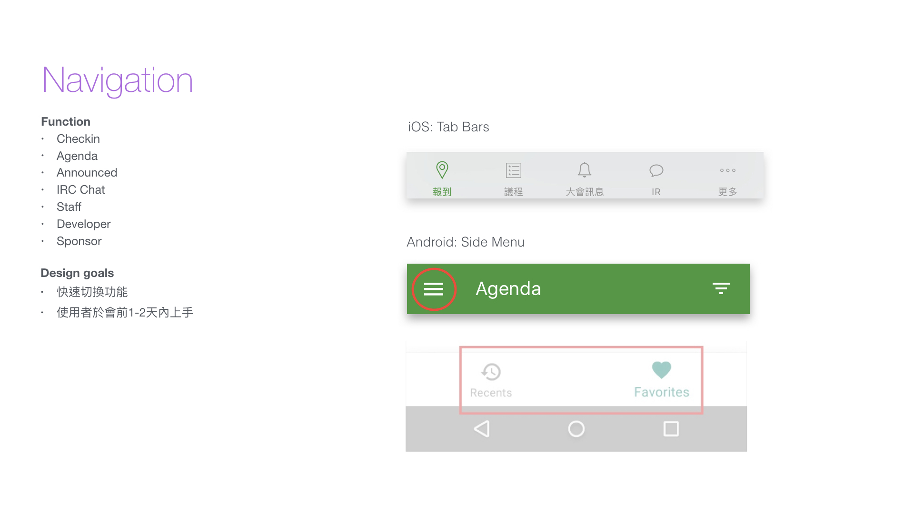
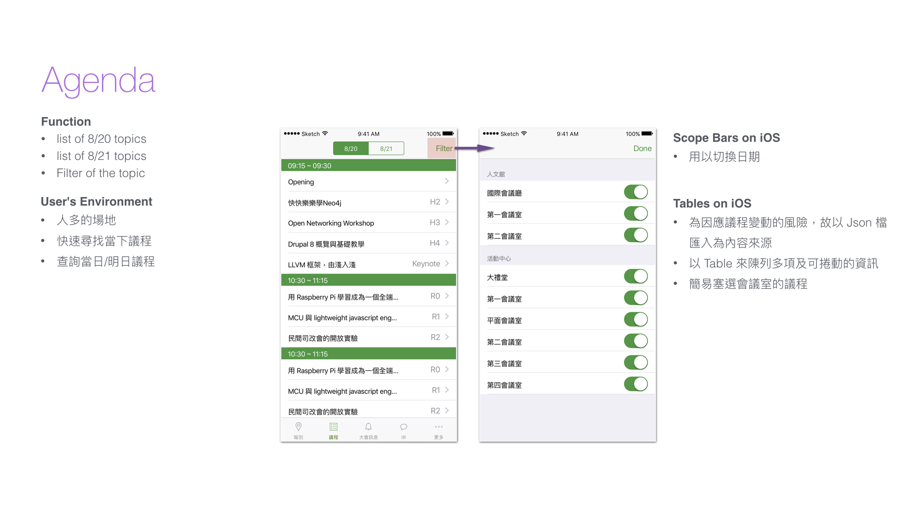
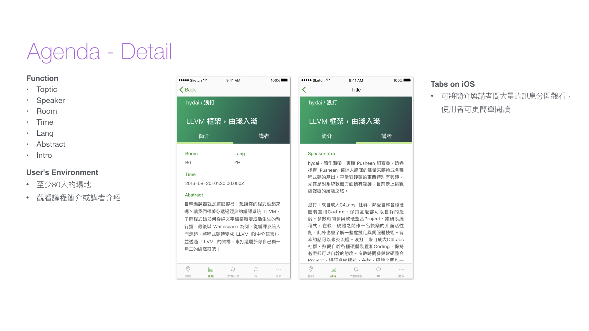
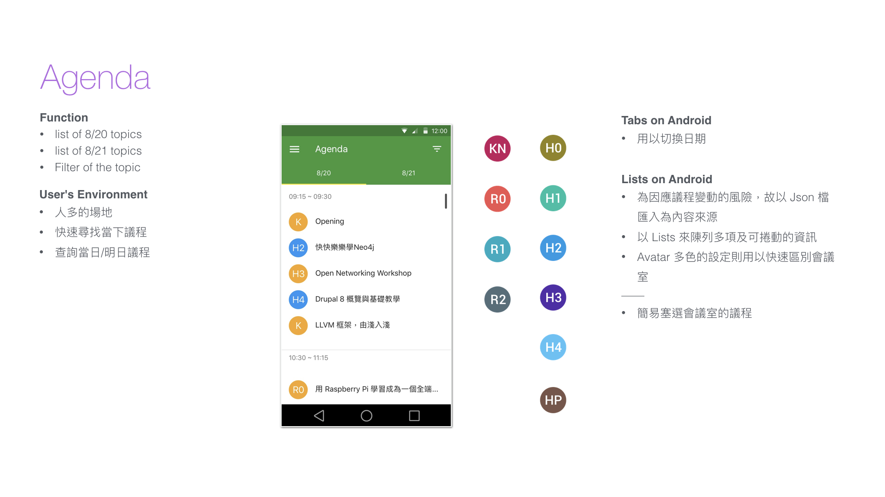
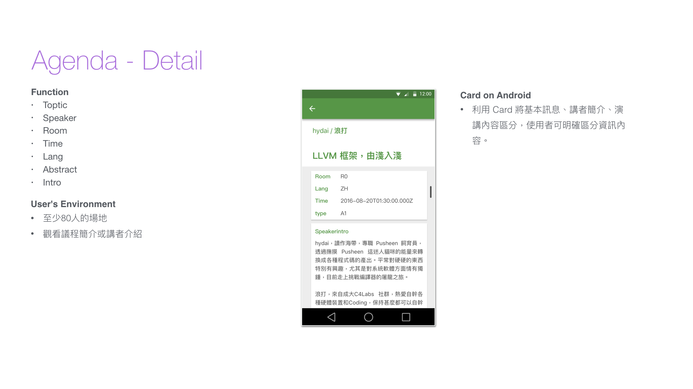
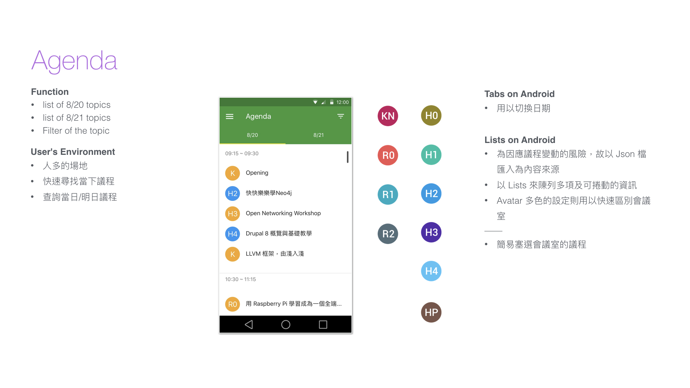
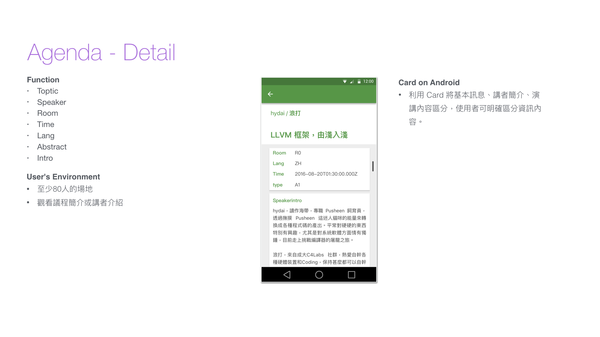

COSCUP, a seminar held in Taiwan with more than a thousand of participant, COSCUP Pass is a new attempt by the CPRTeam at this year's COSCUP when only 30 minutes of registration time is available, which means an average of 40 participant finish check-in per minute.
Time
1month form JUL 2016
Contributors
Haraguroicha, TigerHuang, FrankWu,
Sars, DennyHuang, pcc
My Role
IA, Design, Prototype

Image via COSCUP Flickr
DESIGN CONCEPT
讓與會者在大會開放入場前，即可進行報到，或不局限於特定地點，只要抵達會場，透過會場的網路就能報到。 大會也能更即時的統計出與會者的數量、中午用餐便當數量等資訊，更精準確定便當數量以減少浪費，同時還可以讓使用者可以取得目前議程等簡介、大會公告與瀏覽 IRC 對話記錄等，和會議相關的附加功能。 議程簡介 與會者使用 COSCUP Pass 如果只有做報到、領取物品等功能不是很乏味也無用處嗎？所以我們就想到了大會的主軸 – 議程。 把議程簡介等資訊放入 app 之中，不但可以使與會者更便利的取得這些資訊，同時也能夠分享議程，讓更多人知道有哪些是大家感興趣的議程。THE PROBLEM
- 一個月內完成 iOS 與 Android 開發
- 30 分鐘內完成 1800 位會眾的驗證與通關
- 提高議程表的查詢流暢度及使用率
- 大會與各會眾間的資訊確實傳遞
- IRC的使用
- 會眾須於大會前一天理解如何使用 APP
DESIGN ON IOS
  
DESIGN ON ANDROID
 



DOWNLOAD